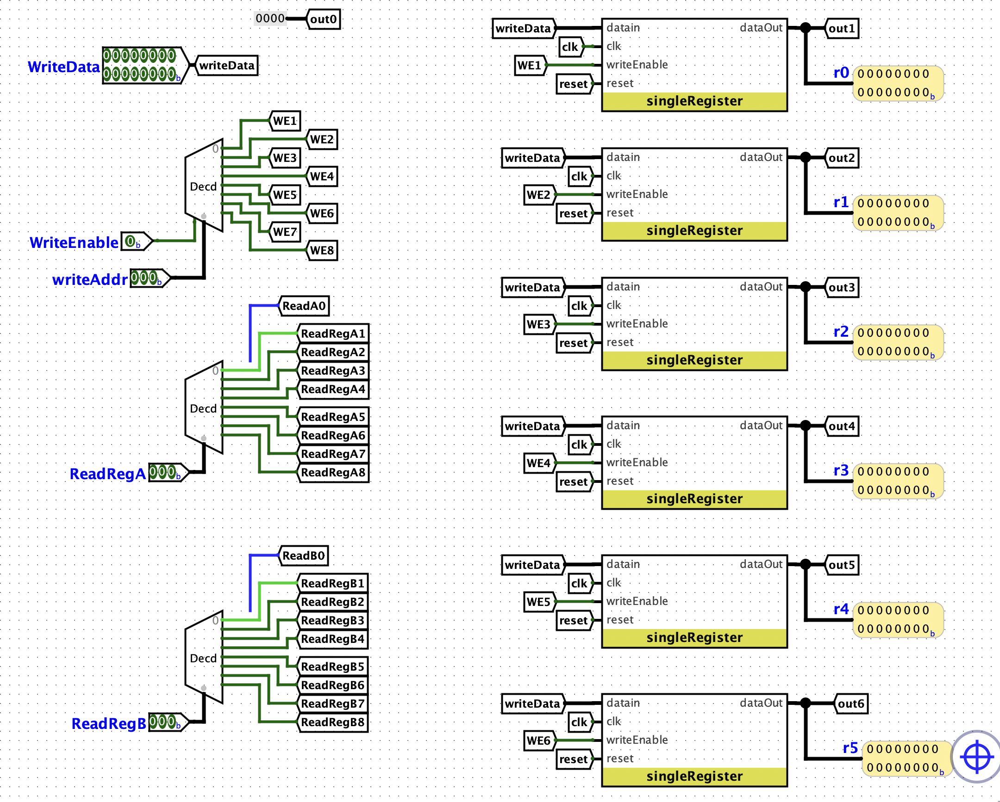
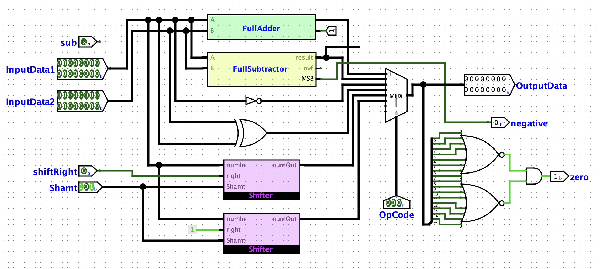
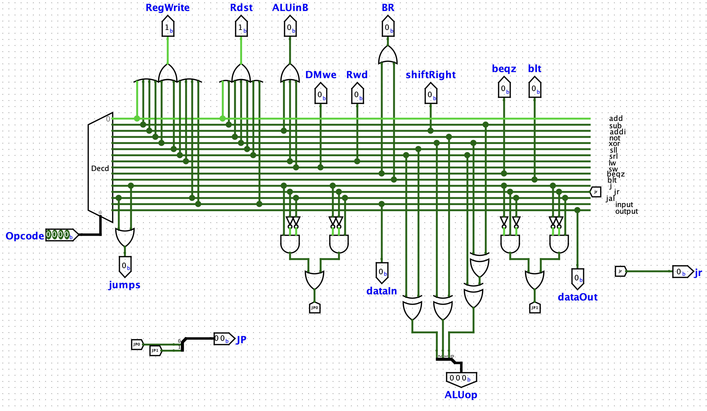

Digital Design · Computer Architecture
16 Bit Logisim CPU
A 16-bit Logisim processor implementing a custom MIPS-style instruction set architecture.

Summary
My first experience with digital design, this project involved using Logisim to graphically design and simulate a 16-bit CPU capable of executing a MIPS-style instruction set architecture. The processor featured a custom ALU with six operations, register file, instruction memory, sign-extension hardware, and control logic supporting arithmetic, memory, and branching operations. This project introduced me to computer architecture and datapath design and ultimately served as the foundation for my later work designing a pipelined FPGA processor in Verilog.
Photo Gallery


